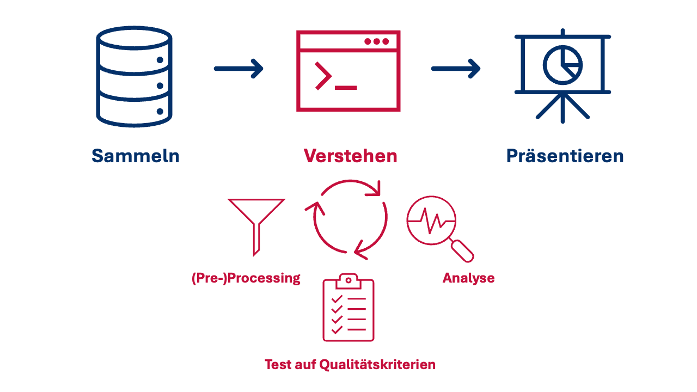

| Session | Datum | Topic | Presenter |
|---|---|---|---|
| 📂 Block 1 | Introduction | ||
| 1 | 23.10.2024 | Kick-Off | Christoph Adrian |
| 2 | 30.10.2024 | DBD: Overview & Introduction | Christoph Adrian |
| 3 | 06.11.2024 | 🔨 Introduction to working with R | Christoph Adrian |
| 📂 Block 2 | Theoretical Background: Twitch & TV Election Debates | ||
| 4 | 13.11.2024 | 📚 Twitch-Nutzung im Fokus | Student groups |
| 5 | 20.11.2024 | 📚 (Wirkungs-)Effekte von Twitch & TV-Debatten | Student groups |
| 6 | 27.11.2024 | 📚 Politische Debatten & Social Media | Student groups |
| 📂 Block 3 | Method: Natural Language Processing | ||
| 7 | 04.12.2024 | 🔨 Text as data I: Introduction | Christoph Adrian |
| 8 | 11.12.2024 | 🔨 Text as data II: Advanced Methods | Christoph Adrian |
| 9 | 18.12.2024 | 🔨 Advanced Method I: Topic Modeling | Christoph Adrian |
| No lecture | 🎄Christmas Break | ||
| 10 | 08.01.2025 | 🔨 Advanced Method II: Machine Learning | Christoph Adrian |
| 📂 Block 4 | Project Work | ||
| 11 | 15.01.2025 | 🔨 Project work | Student groups |
| 12 | 22.01.2025 | 🔨 Project work | Student groups |
| 13 | 29.01.2025 | 📊 Project Presentation I | Student groups (TBD) |
| 14 | 05.02.2025 | 📊 Project Presentation & 🏁 Evaluation | Studentds (TBD) & Christoph Adrian |
🔨 Text as data in R
Session 07
04.12.2024
Seminarplan
Agenda
US-Wahldebatten auf
Hintergrund zu den Daten bzw. der Erhebung
Wahldebatte am digitalen Lagerfeuer
Was wir (bisher) aus der Literatur gelernt haben
- Wahldebatten sind ein spezifischer Teil des politischen Diskurses und haben Einfluss auf Emotionen, Einstellungen und Handlungen von Menschen
- Soziale Medien haben die Kommunikation und Interaktion zwischen Politikern und Bürgern verändert
- Twitch ist eine Social Networking Site (SNS) mit besonderen Eigenschaften (z.B. “Live”-Aspekt & die Bedeutung der community) & zunehmend Ort für politische Diskurse
Who are we looking at?
Überblick über verschiedenen Statistiken der betrachteten Streamer
Expand for full code
streamer_stats <- qs::qread(here("local_data/twitch_streamer_stats.qs"))
streamer_stats %>%
pivot_longer(cols = c(avg_viewers, followers, hours_streamed), names_to = "statistic", values_to = "value") %>%
ggplot(aes(x = month, y = value, fill = streamer)) +
geom_bar(stat = "identity", position = "dodge") +
facet_grid(statistic ~ ., scales = "free_y", labeller = as_labeller(c(
avg_viewers = "Average Viewers",
followers = "Followers",
hours_streamed = "Hours Streamed"))) +
theme_minimal() +
labs(
x = "Month",
y = "",
title = "Streamer Statistics Over Time",
fill = "Streamer") +
scale_y_continuous(labels = scales::comma) +
ggsci::scale_fill_cosmic()Wie wurden die Daten erhoben?
Überblick über den Prozess der Datenerhebung
- Erhebung des Live-Stream-Chats mit
Paket chat_downloader - Download der Twitch & TV VoDs mit dem
Paket twitch-dl - Transkription der Streams & der Debatte mit AI-based Transkriptionstool NoScribe
Herausforderungen
- Eingeschränkte Twitch API ➜ nicht alle (ursprünglich verfügbaren) Informationen abrufbar
- Limitierte Verfügbarkeit der VoDs auf Twitch ➜ Re-Upload auf unserem YouTube-Kanal (ungelistet)
- Qualität der Transkription ist gut, Identifkation der sprechenden Person(en) ausbaufähig
Welche Daten stehen zur Verfügung?
Überblick über die Daten
- Links zu den (Uploads der) VoDs auf StudOn im Ordner Kursmaterialien/VODs
- Datensatz
chats.qs(& Dokumentation) mit den Chatnachrichten aller Live-Streams ( hasanabi, zackrawrr und | TheMajorityReport) - Datensatz
transcripts.qs(& Dokumentation) mit den Transkripten der TV-Debatten (Presidential auf ABC, Vice Presidential auf CBS) & aller Live-Streams ( hasanabi, zackrawrr und | TheMajorityReport) - Dictionary
dictionary_chat_emotes.RDSmit den Emojis und Emotes, die in den hier analyisierten Twitch & YouTube-Chats verwendet wurden
Chats als Rohform von DBD
Kurzer Überblick über den chats-Datensatz
Rows: 913,375
Columns: 33
$ streamer <chr> "hasanabi", "hasanabi", "hasanabi", "hasanabi", …
$ url <chr> "https://www.twitch.tv/videos/2247664726", "http…
$ platform <chr> "twitch", "twitch", "twitch", "twitch", "twitch"…
$ debate <chr> "presidential", "presidential", "presidential", …
$ user_name <chr> "bendaspur", "spackle_pirate", "texaschollima", …
$ user_id <chr> "54058406", "182041182", "185502300", "159018462…
$ user_display_name <chr> "BenDaSpur", "spackle_pirate", "TexasChollima", …
$ user_badges <list> [], [], [], [["twitch_recap_2023", 1, "Twitch R…
$ message_timestamp <dbl> 19, 19, 20, 20, 21, 21, 22, 22, 24, 25, 25, 25, …
$ message_id <chr> "dc03b89a-722d-4eaa-a895-736533a68aca", "6be50e1…
$ message_type <chr> "text_message", "text_message", "text_message", …
$ message_content <chr> "60fps LETSGO 60fps LETSGO 60fps LETSGO 60fps LE…
$ message_emotes <list> [], [], [], [], [], [], [], [], [], [], [], [["…
$ message_length <int> 51, 17, 20, 27, 35, 14, 20, 5, 10, 9, 106, 97, 3…
$ message_timecode <Period> 19S, 19S, 20S, 20S, 21S, 21S, 22S, 22S, 24S, …
$ message_time <chr> "00:00:19", "00:00:19", "00:00:20", "00:00:20", …
$ message_during_debate <dbl> 0, 0, 0, 0, 0, 0, 0, 0, 0, 0, 0, 0, 0, 0, 0, 0, …
$ user_has_badge <dbl> 0, 0, 0, 1, 1, 1, 1, 1, 0, 0, 1, 1, 1, 1, 1, 0, …
$ user_is_premium <dbl> 0, 0, 0, 0, 0, 0, 0, 0, 0, 0, 1, 0, 0, 0, 1, 0, …
$ user_is_subscriber <dbl> 0, 0, 0, 0, 0, 0, 0, 0, 0, 0, 1, 0, 0, 0, 0, 0, …
$ user_is_turbo <dbl> 0, 0, 0, 0, 0, 0, 0, 0, 0, 0, 0, 0, 0, 0, 0, 0, …
$ user_is_moderator <dbl> 0, 0, 0, 0, 0, 0, 0, 0, 0, 0, 0, 1, 0, 0, 0, 0, …
$ user_is_partner <dbl> 0, 0, 0, 0, 0, 0, 0, 0, 0, 0, 0, 1, 0, 0, 0, 0, …
$ user_is_subgifter <dbl> 0, 0, 0, 0, 0, 0, 0, 0, 0, 0, 0, 0, 0, 0, 0, 0, …
$ user_is_broadcaster <dbl> 0, 0, 0, 0, 0, 0, 0, 0, 0, 0, 0, 0, 0, 0, 0, 0, …
$ user_is_vip <dbl> 0, 0, 0, 0, 0, 0, 0, 0, 0, 0, 0, 0, 0, 0, 0, 0, …
$ user_is_twitchdj <dbl> 0, 0, 0, 0, 0, 0, 0, 0, 0, 0, 0, 0, 0, 0, 0, 0, …
$ user_is_founder <dbl> 0, 0, 0, 0, 0, 0, 0, 0, 0, 0, 0, 0, 0, 0, 0, 0, …
$ user_is_staff <dbl> 0, 0, 0, 0, 0, 0, 0, 0, 0, 0, 0, 0, 0, 0, 0, 0, …
$ user_is_game_dev <dbl> 0, 0, 0, 0, 0, 0, 0, 0, 0, 0, 0, 0, 0, 0, 0, 0, …
$ user_is_ambassador <dbl> 0, 0, 0, 0, 0, 0, 0, 0, 0, 0, 0, 0, 0, 0, 0, 0, …
$ user_no_audio <dbl> 0, 0, 0, 0, 0, 0, 0, 0, 0, 0, 0, 0, 0, 0, 0, 0, …
$ user_no_video <dbl> 0, 0, 0, 0, 0, 0, 0, 0, 0, 0, 0, 0, 0, 0, 0, 0, …Möglichkeite zum Data Linking mit Transkripten
Kurzer Überblick über den transcripts-Datensatz
Rows: 5,861
Columns: 12
$ id_sequence <chr> "p1_s0001", "p1_s0002", "p1_s0003", "p1_s0004",…
$ source <chr> "presidential_debate-abc", "presidential_debate…
$ speaker <chr> "S27", "S35", "S27", "S55", "S61", "S55", "S43"…
$ timestamp <time> 00:00:00, 00:00:11, 00:00:20, 00:00:34, 00:00:…
$ dialogue <chr> "Tonight, the high-stakes showdown here in Phil…
$ dialogue_length <int> 229, 148, 245, 91, 31, 13, 37, 102, 316, 409, 6…
$ duration <dbl> 11, 9, 14, 6, 4, 1, 4, 10, 17, 21, 28, 8, 13, 4…
$ debate <chr> "presidential", "presidential", "presidential",…
$ streamer <chr> "tv_station", "tv_station", "tv_station", "tv_s…
$ id_streamer <dbl> 1, 1, 1, 1, 1, 1, 1, 1, 1, 1, 1, 1, 1, 1, 1, 1,…
$ id_speaker <chr> "p1_s27", "p1_s35", "p1_s27", "p1_s55", "p1_s61…
$ sequence_during_debate <dbl> 1, 1, 1, 1, 1, 1, 1, 1, 1, 1, 1, 1, 1, 1, 1, 1,…Theoretische Grundlagen
Vorstellung des Prozesses der automatisierten Inhaltsanalyse
Where the “magic” happends
Automatisierte Inhaltsanalyse: Definition und Ablauf
Automatisierte Inhaltsanalyse beschreibt die automatisierte (z. B. via Programmierskript) Analyse von Inhalten (z. B. Text, Bilder). Dabei unterstützen Forschende/manuelle Codierer:innen, etwa durch die Validierung von Ergebnissen. (Hase, 2023)
Aber:
- Automatisierte Methoden “augment humans, not replace them” (Grimmer & Stewart, 2013, p. S.270)
- „English before everything“ (Baden et al., 2022, p. S.9)
- (Systematische) Fehler: “All quantitative models of language are wrong — but some are useful” (Grimmer & Stewart, 2013, p. S.269)
Workflow, demystified
Typische Schritte der automatisierten Inhaltsanalyse
Building a shared vocabulary
Grundbegriffe und Terminologien I

Building a shared vocabulary
Grundbegriffe und Terminologien II
- Lemma: Die Grundform eines Wortes. Zum Beispiel ist “run”” das Lemma von “running”“.
- Stoppwörter: Wörter, die in der Regel keine inhaltliche Bedeutung haben und daher aus dem Text entfernt werden, z.B. “and”, “or” & “the”.
- Parts of speech (POS): Linguistische Marker, die die allgemeine Kategorie einer sprachlichen Eigenschaft eines Wortes anzeigen, z.B. Nomen, Verb, Adjektiv usw.
- Named entities: Ein reales Objekt, wie Personen, Orte, Organisationen, Produkte usw., das mit einem Eigennamen bezeichnet werden kann, z.B. “Donald Trump“ oder „Vereinigte Staaten”.
- Multi-word expressions: Wortfolgen, die ein einzelnes Konzept bezeichnen (und im Deutschen wären), z.B. “Mehrwertsteuer” (im Englischen: “value added tax”).
Was ist Preprocessing und warum ist es wichtig?
Typische Schritte des Preprocessings
Reduziert die Komplexität von Textdaten, ohne deren substanzielle Bedeutung zu minimieren
Umfasst die Bereinigung (Reduzierung von systematischen Fehlern, z.B. Encoding) & Normalisierung (Texte über Dokumente, Sprache, Plattformen, etc. vergleichbar machen)
Typische Bestandteile der Normalisierung sind Tokenisierung, Kleinschreibung, Entfernung von Stoppwörtern, Satz- &Sonderzeichen, Lemmatisierung/Stemming und “Pruning” (häufige/seltene Features entfernen)
Abwägungen beim Preprocessing
Herausforderungen und Konsequenzen der Entscheidungen beim Preprocessing
- Oft verändert Kleinschreibung die Bedeutung von Features nicht, aber es gibt Ausnahmen (“Bild” vs. BILD-Zeitung)
- Oft sind Sonderzeichen (z.B. Satzzeichen) nicht von substanzieller Bedeutung, aber es gibt Ausnahmen (z.B. #metoo, G7, Emojis)
- Stoppwörter sind stark kontextabhängig! ➜ oft ist es sinnvoll, eigene “organische” Stoppwortlisten zu erstellen
- Lemmatisierung (“running” “ran” ➜ “run”) häufig “besser”, Stemming (“running” “ran” ➜ “run” “ran”) häufig schneller
- Reihenfolge des Preprocessings kann Ergebnisse beeinflussen (z.B. Entfernung von Stoppwörtern vor oder nach Lemmatisierung)
Wenn aus Wörtern Zahlen werden
Die einfachste Form der Textrepräsentation: bag-of-words
- Damit Computer Text verstehen bzw. verarbeiten können, muss der Text in ein numerisches Format umgewandelt werden
- Eine einfache und weit verbreitete Methode zur Textrepräsentation in der natürlichen Sprachverarbeitung (NLP) ist das bag-of-words Modell
- repräsentiert einen Text (z.B. einen Satz oder ein Dokument) als eine Sammlung von Wörtern, ohne Berücksichtigung der Reihenfolge oder Grammatik
- Annahme: Reihenfolge und Kontext von Wörtern haben keinen Einfluss auf Ihre Bedeutung
Ugly, but efficient
Warum die bag-of-words Annahme problematisch ist …
- Polysemie: Fliege (Tier & Kleidungsstück), “Maus” (Tier & Computerzubehör)
- Verneinung: “Nicht schlecht!”
- Named entities: “Olaf Scholz”, “Vereinigte Staaten”
- Wörter mit ähnlichen Bedeutungen: “Gemüse” & “Grünzeug”
… und doch so häufig verwendet wird
- schnell, resourcenschonend und “robust”
- leichte Anpassung bzw. Erweiterung steigern Aussagekraft
Beyond “bag-of-words”
Text-as-Data Repräsentationen, die Reihenfolge und Kontext berücksichtigen
- Ngram-basierte Repräsentation (z. B. Collocations & Keywords-in-Context)
- Syntax-basierte Repräsentation (z. B. Part-of-Speech Tagging & Dependency Parsing)
- Vektor-basierte Repräsentation in semantischen, n-dimensionalen Räumen (z. B. Word Embeddings)
Preprocessing mit quanteda
Working with text as data in R
Flexible for power users, simple for beginners
Hintergrund zu Paket & Projekt quanteda (Benoit et al., 2018)
- quanteda ist ein umfassendes R-Paket für die Textverarbeitung und Textanalyse
- Sehr aktives Open-Source-Projekt mit umfangreicher Dokumentation und Community-Support
- Britische gemeinnützige Organisation, die sich der Förderung von Open-Source-Software für die Textanalyse widmet
- Alternative:
tidytext(Silge & Robinson, 2017)
Grundlage ist immer das Korpus
Arbeiten mit quanteda: corpus
Corpus consisting of 5,861 documents and 10 docvars.
p1_s0001 :
"Tonight, the high-stakes showdown here in Philadelphia betwe..."
p1_s0002 :
"A historic race for president upended just weeks ago, Presid..."
p1_s0003 :
"The candidates separated by the smallest of margins, essenti..."
p1_s0004 :
"This is an ABC News special. The most consequential moment o..."
p1_s0005 :
"Together, we'll chart a... (..)"
p1_s0006 :
"Donald Trump."
[ reached max_ndoc ... 5,855 more documents ]Einfache Tokenisierung …
Einfluss der Preporcessing-Schritte am Beispiel (I)
# Tokenize corpus
toks_simple <- corp_transcripts %>%
quanteda::tokens()
# Output
head(toks_simple[[1]], 100) [1] "Tonight" "," "the" "high-stakes" "showdown"
[6] "here" "in" "Philadelphia" "between" "Vice"
[11] "President" "Kamala" "Harris" "and" "former"
[16] "President" "Donald" "Trump" "." "Their"
[21] "first" "face-to-face" "meeting" "in" "this"
[26] "presidential" "election" "," "their" "first"
[31] "face-to-face" "meeting" "ever" "." … mit Entfernung von Satz- und Sonderzeichen …
Einfluss der Preporcessing-Schritte am Beispiel (II)
toks_nopunct <- corp_transcripts %>%
quanteda::tokens(
remove_punct = TRUE,
remove_symbols = TRUE,
remove_numbers = TRUE,
remove_url = TRUE,
split_hyphens = FALSE,
split_tags = FALSE
)
head(toks_nopunct[[1]], 100) [1] "Tonight" "the" "high-stakes" "showdown" "here"
[6] "in" "Philadelphia" "between" "Vice" "President"
[11] "Kamala" "Harris" "and" "former" "President"
[16] "Donald" "Trump" "Their" "first" "face-to-face"
[21] "meeting" "in" "this" "presidential" "election"
[26] "their" "first" "face-to-face" "meeting" "ever" … und ohne Stopwörter
Einfluss der Preporcessing-Schritte am Beispiel (III)
toks_nostopw <- corp_transcripts %>%
quanteda::tokens(
remove_punct = TRUE,
remove_symbols = TRUE,
remove_numbers = TRUE,
remove_url = TRUE,
split_hyphens = FALSE,
split_tags = FALSE
) %>%
quanteda::tokens_remove(
pattern = quanteda::stopwords("en")
)
head(toks_nostopw[[1]], 100) [1] "Tonight" "high-stakes" "showdown" "Philadelphia" "Vice"
[6] "President" "Kamala" "Harris" "former" "President"
[11] "Donald" "Trump" "first" "face-to-face" "meeting"
[16] "presidential" "election" "first" "face-to-face" "meeting"
[21] "ever" Direkter Vergleich
Einfluss der Preporcessing-Schritte am Beispiel (IV)
[1] "Tonight" "," "the" "high-stakes" "showdown"
[6] "here" "in" "Philadelphia" "between" "Vice"
[11] "President" "Kamala" "Harris" "and" "former"
[16] "President" "Donald" "Trump" "." "Their"
[21] "first" "face-to-face" "meeting" "in" "this"
[26] "presidential" "election" "," "their" "first"
[31] "face-to-face" "meeting" "ever" "." [1] "Tonight" "the" "high-stakes" "showdown" "here"
[6] "in" "Philadelphia" "between" "Vice" "President"
[11] "Kamala" "Harris" "and" "former" "President"
[16] "Donald" "Trump" "Their" "first" "face-to-face"
[21] "meeting" "in" "this" "presidential" "election"
[26] "their" "first" "face-to-face" "meeting" "ever" [1] "Tonight" "high-stakes" "showdown" "Philadelphia" "Vice"
[6] "President" "Kamala" "Harris" "former" "President"
[11] "Donald" "Trump" "first" "face-to-face" "meeting"
[16] "presidential" "election" "first" "face-to-face" "meeting"
[21] "ever" Ngrams für mehr Kontext
Tokenisierung von Bi & Skipgrams
[1] "Tonight_high-stakes" "high-stakes_showdown" "showdown_Philadelphia"
[4] "Philadelphia_Vice" "Vice_President" "President_Kamala"
[7] "Kamala_Harris" "Harris_former" "former_President"
[10] "President_Donald" "Donald_Trump" "Trump_first"
[13] "first_face-to-face" "face-to-face_meeting" "meeting_presidential"
[16] "presidential_election" "election_first" "first_face-to-face"
[19] "face-to-face_meeting" "meeting_ever" [1] "Tonight_high-stakes" "Tonight_showdown"
[3] "high-stakes_showdown" "high-stakes_Philadelphia"
[5] "showdown_Philadelphia" "showdown_Vice"
[7] "Philadelphia_Vice" "Philadelphia_President"
[9] "Vice_President" "Vice_Kamala"
[11] "President_Kamala" "President_Harris"
[13] "Kamala_Harris" "Kamala_former"
[15] "Harris_former" "Harris_President"
[17] "former_President" "former_Donald"
[19] "President_Donald" "President_Trump"
[21] "Donald_Trump" "Donald_first"
[23] "Trump_first" "Trump_face-to-face"
[25] "first_face-to-face" "first_meeting"
[27] "face-to-face_meeting" "face-to-face_presidential"
[29] "meeting_presidential" "meeting_election"
[31] "presidential_election" "presidential_first"
[33] "election_first" "election_face-to-face"
[35] "first_face-to-face" "first_meeting"
[37] "face-to-face_meeting" "face-to-face_ever"
[39] "meeting_ever" Welche Features treten häufig nacheinander auf?
Kollokationen für Identifkation prominenter Bigramme
collocation count count_nested length lambda z
1 know know 1337 0 2 3.890787 98.31370
2 saying bad 558 0 2 6.503305 81.19215
3 bad saying 553 0 2 6.481795 80.98625
4 going say 666 0 2 4.555737 80.92246
5 say going 661 0 2 4.562963 80.82524
6 donald trump 755 0 2 7.422847 75.19267
7 kamala harris 494 0 2 7.873933 68.88003
8 vice president 429 0 2 7.258104 56.72753
9 oh oh 229 0 2 4.679549 54.95066
10 right now 269 0 2 3.996328 53.27167
11 senator vance 129 0 2 6.583164 49.48173
12 little bit 132 0 2 8.268099 45.80914
13 president harris 186 0 2 4.027681 45.69845
14 oh god 154 0 2 6.175930 44.94423
15 years ago 102 0 2 6.436807 43.06424
16 tim walz 90 0 2 7.588398 43.05596
17 president trump 203 0 2 3.468589 42.70406
18 four years 100 0 2 6.381600 42.53221
19 health care 136 0 2 7.400206 41.83123
20 white house 85 0 2 8.071701 41.52827
21 donald trump's 132 0 2 6.408658 41.05938
22 former president 141 0 2 5.790480 41.04486
23 curious curious 373 0 2 11.836611 40.77202
24 governor walz 77 0 2 6.512020 39.65499
25 two minutes 84 0 2 6.490910 39.39074Von Tokens zur DFM
Erklärung der Dokument-Feature-Matrix (DFM)
Sehr häufig genutzten Stukturen der “klassischen” Textverarbeitung mit folgende Merkmale:
jede Zeile ein Dokument (wie z.B. eine Chatnachricht oder eine Sprecher:innensequenz),
jede Spalte repräsentiert einen Begriff, und
jeder Wert enthält (typischerweise) die Anzahl der Häufigkeit dieses Begriffs in diesem Dokument.

Überprüfung häufigster Token
Anwendung der DFM
feature frequency rank docfreq group
1 like 6350 1 1617 all
2 know 3872 2 1325 all
3 think 2932 3 1202 all
4 people 2710 4 1158 all
5 yeah 2551 5 1107 all
6 going 2364 6 956 all
7 just 2145 7 1322 all
8 say 1632 8 715 all
9 right 1556 9 930 all
10 trump 1492 10 859 all
11 one 1461 11 958 all
12 president 1372 12 787 all
13 get 1320 13 850 all
14 said 1262 14 822 all
15 now 1222 15 883 all
16 want 1207 16 755 all
17 can 1137 17 723 all
18 really 1137 17 620 all
19 uh 1134 19 421 all
20 fucking 1074 20 522 all
21 lot 1049 21 632 all
22 saying 1042 22 376 all
23 oh 1003 23 546 all
24 well 974 24 740 all
25 bad 963 25 251 allCorpus ➞ ( Tokens ➞ DFM ) ⟳
Beispiel für den Loop des (Pre-)Processing
feature frequency rank docfreq group
1 like 6350 1 1617 all
2 know 3872 2 1325 all
3 think 2932 3 1202 all
4 people 2710 4 1158 all
5 yeah 2551 5 1107 all
6 going 2364 6 956 all
7 just 2145 7 1322 all
8 say 1632 8 715 all
9 right 1556 9 930 all
10 trump 1492 10 859 all
11 one 1461 11 958 all
12 president 1372 12 787 all
13 get 1320 13 850 all
14 said 1262 14 822 all
15 now 1222 15 883 all
16 want 1207 16 755 all
17 can 1137 17 723 all
18 really 1137 17 620 all
19 fucking 1074 19 522 all
20 lot 1049 20 632 all
21 saying 1042 21 376 all
22 well 974 22 740 all
23 bad 963 23 251 all
24 mean 935 24 557 all
25 way 905 25 572 allWelche User werden am häufigsten erwähnt?
Beispiele für Analysen auf Basis der DFM: Auswahl bestimmter Muster
# Create corpus
corp_chats <- chats %>%
quanteda::corpus(
docid_field = "message_id",
text_field = "message_content"
)
# Create DFM
dfm_chats <- corp_chats %>%
quanteda::tokens(
remove_punct = TRUE,
remove_symbols = TRUE,
remove_numbers = TRUE,
remove_url = TRUE,
split_hyphens = FALSE,
split_tags = FALSE
) %>%
quanteda::dfm()
# Output
dfm_chats %>%
quanteda::dfm_select(pattern = "@*") %>%
quanteda.textstats::textstat_frequency(
n = 25) feature frequency rank docfreq group
1 @hasanabi 29173 1 28371 all
2 @zackrawrr 11430 2 11381 all
3 @gizmomacks 246 3 243 all
4 @toxicsjw 167 4 167 all
5 @beteljuice 158 5 158 all
6 @megaphonix 154 6 150 all
7 @hasan 76 7 76 all
8 @depressedaether 68 8 68 all
9 @nicebathroom 68 8 68 all
10 @littlebear36 64 10 61 all
11 @david_leonard 61 11 61 all
12 @hasandpiker 58 12 58 all
13 @sambarty2k 58 12 58 all
14 @tiamani 55 14 55 all
15 @matefeedart 50 15 50 all
16 @wihby 47 16 47 all
17 @freejam013 44 17 44 all
18 @austinshow 42 18 42 all
19 @mf_jewm 41 19 41 all
20 @chat 41 19 33 all
21 @lakemcgroove 37 21 37 all
22 @mhud 37 21 37 all
23 @thistwitchname 36 23 36 all
24 @mangobreezy 35 24 35 all
25 @mijnboot 35 24 35 allGezielte Suche nach spezifischen Worten
Hintergrund und Anwendung von Diktionären
- Listen von Features, die ein bestimmtes Konstrukt (z.B. Emotionalisierung) beschreiben.
- In der (klassischen) Diktionär-Analysen wird gezählt, wie häufig manifeste Features vorkommen, um darauf zu schliessen, inwiefern ein latentes Konstrukt vorkommt.
- Verschiedene Unterscheidungen:
- Off-the-shelf (z.B. LIWC, ANEW) vs. organische (eigene, domänenspezifische) Diktionäre
- Breite (möglichst umfassende Wortliste) vs. spezifische (möglichst spezifische Wortliste) Diktionäre
Organisch, aber datenbasiert
Vorstellung des (erstellen) Emoji-Diktionärs
# Load custom emoji-dictionary
dict_chat_emotes <- readRDS(here("local_data/dictionary_chat_emotes.RDS"))
# Output
dict_chat_emotesDictionary object with 5546 key entries.
- [0Unroll]:
- 0unroll
- [1]:
- 1
- [2020Celebrate]:
- 2020celebrate
- [2020Forward]:
- 2020forward
- [2020Glitchy]:
- 2020glitchy
- [2020Pajamas]:
- 2020pajamas
[ reached max_nkey ... 5,540 more keys ]Welche emojis werden am häufigsten verwendet?
Beispiele für Analysen auf Basis der DFM: Dictionary
feature frequency rank docfreq group
1 LUL 20194 1 14967 all
2 hasL 12455 2 5856 all
3 bleedPurple 5188 3 5174 all
4 Kappa 4971 4 4240 all
5 hasSlam 2989 5 1002 all
6 NotLikeThis 2341 6 1354 all
7 🇵🇸 1968 7 780 all
8 hasChud 1792 8 1206 all
9 hasHi 1401 9 851 all
10 hasO 1375 10 609 all
11 hasBoot 1209 11 551 all
12 hasRaid 1092 12 470 all
13 elbyBlom 1001 13 1001 all
14 WutFace 964 14 687 all
15 hasBaited 901 15 396 all
16 hasMods 853 16 604 all
17 Guns 755 17 728 all
18 hasKkona 727 18 384 all
19 DinoDance 721 19 269 all
20 PopNemo 709 20 334 all
21 TwitchConHYPE 630 21 236 all
22 hasSadge 601 22 481 all
23 has0head 599 23 301 all
24 hasFlex 569 24 294 all
25 e 563 25 496 allWie bereinigen wir die Daten?
👥 Group activity zur Datenbereinigung und -normalisierung
And now … you!
Gruppenarbeit (ca. 15 Minuten) mit kurzer Ergebnisdiskussion (ca. 15 Minuten)
Arbeitsauftrag
Überlegt zusammen mit eurer/m Präsentationspartner:in (ca. 5 Minuten), welche Bereinigungschritte für die jeweiligen Daten (Chats, Transkripte und Korpus) im Kontext euers Projekts notwendig sind.
Diskutiert eure Ergebnisse mit einer anderen Präsentationsgruppe (ca. 5 Minuten).
Dokumentiert euer Fazit (inklusive der konkreten Schritte) auf einer der Folienvorlagen (siehe nächste Slide).
05:00
Please discuss!
Bitte nutzt die jeweilige Folienvorlage für die Dokumentation euerer Ergebnisse
10:00
Time for questions
Bis zur nächsten Sitzung!
References
Baden, C., Pipal, C., Schoonvelde, M., & Velden, M. A. C. G. van der. (2022). Three Gaps in Computational Text Analysis Methods for Social Sciences: A Research Agenda. Communication Methods and Measures, 16(1), 1–18. https://doi.org/10.1080/19312458.2021.2015574
Benoit, K., Watanabe, K., Wang, H., Nulty, P., Obeng, A., Müller, S., & Matsuo, A. (2018). Quanteda: An r package for the quantitative analysis of textual data. Journal of Open Source Software, 3(30), 774. https://doi.org/10.21105/joss.00774
Grimmer, J., & Stewart, B. M. (2013). Text as Data: The Promise and Pitfalls of Automatic Content Analysis Methods for Political Texts. Political Analysis, 21(3), 267–297. https://doi.org/10/f458q9
Hase, V. (2023). Automated Content Analysis (F. Oehmer-Pedrazzi, S. H. Kessler, E. Humprecht, K. Sommer, & L. Castro, Eds.; pp. 23–36). Springer Fachmedien Wiesbaden. https://link.springer.com/10.1007/978-3-658-36179-2_3
Silge, J., & Robinson, D. (2017). Text mining with r: A tidy approach (First edition). O’Reilly.
Zheng, A., & Casari, A. (2018). Feature engineering for machine learning: Principles and techniques for data scientists (First edition). O’Reilly.